Source4.6/5 · 16 individually reviewed regions.
No exact literal runtime reference found in scripts/scenes. Legacy combined sheet remains preserved; dynamic use and actual job presence not proved.
The familiar child face, tiara, brown curls/rainbow forelock, lavender-pink bodice, iridescent lavender tail and paired rainbow fin remain drawn, high-key and identifiable. Full-body contours and transparent cell margins are intact. Small fingers and detailed tail highlights require an in-game phone-size check; native art quality is not motion/contact acceptance.
SHARED-ROSHAN_GESTURES-00
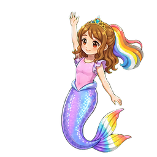
Source4.6/5 · exact region[0, 0, 256, 256]
One raised arm waves with an open hand. The familiar child face, tiara, brown curls/rainbow forelock, lavender-pink bodice, iridescent lavender tail and paired rainbow fin remain drawn, high-key and identifiable. Full-body contours and transparent cell margins are intact. Small fingers and detailed tail highlights require an in-game phone-size check; native art quality is not motion/contact acceptance.
SHARED-ROSHAN_GESTURES-01
Source4.6/5 · exact region[256, 0, 256, 256]
Two attached arms reach upward in a cheer. The familiar child face, tiara, brown curls/rainbow forelock, lavender-pink bodice, iridescent lavender tail and paired rainbow fin remain drawn, high-key and identifiable. Full-body contours and transparent cell margins are intact. Small fingers and detailed tail highlights require an in-game phone-size check; native art quality is not motion/contact acceptance.
SHARED-ROSHAN_GESTURES-02
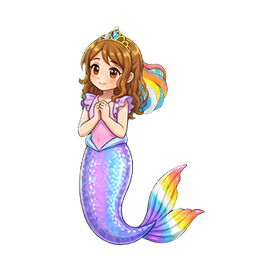
Source4.6/5 · exact region[512, 0, 256, 256]
Hands clasp at the chest, eyes open. The familiar child face, tiara, brown curls/rainbow forelock, lavender-pink bodice, iridescent lavender tail and paired rainbow fin remain drawn, high-key and identifiable. Full-body contours and transparent cell margins are intact. Small fingers and detailed tail highlights require an in-game phone-size check; native art quality is not motion/contact acceptance.
SHARED-ROSHAN_GESTURES-03
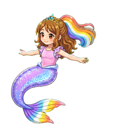
Source4.6/5 · exact region[768, 0, 256, 256]
Arms spread while the tail curls broadly to the side. The familiar child face, tiara, brown curls/rainbow forelock, lavender-pink bodice, iridescent lavender tail and paired rainbow fin remain drawn, high-key and identifiable. Full-body contours and transparent cell margins are intact. Small fingers and detailed tail highlights require an in-game phone-size check; native art quality is not motion/contact acceptance.
SHARED-ROSHAN_GESTURES-04
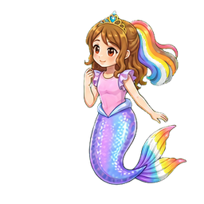
Source4.6/5 · exact region[0, 256, 256, 256]
One hand rests near the cheek in an attentive looking pose. The familiar child face, tiara, brown curls/rainbow forelock, lavender-pink bodice, iridescent lavender tail and paired rainbow fin remain drawn, high-key and identifiable. Full-body contours and transparent cell margins are intact. Small fingers and detailed tail highlights require an in-game phone-size check; native art quality is not motion/contact acceptance.
SHARED-ROSHAN_GESTURES-05
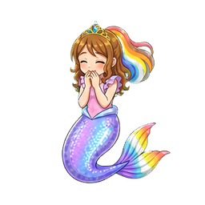
Source4.6/5 · exact region[256, 256, 256, 256]
Closed eyes and hands near the mouth express giggling. The familiar child face, tiara, brown curls/rainbow forelock, lavender-pink bodice, iridescent lavender tail and paired rainbow fin remain drawn, high-key and identifiable. Full-body contours and transparent cell margins are intact. Small fingers and detailed tail highlights require an in-game phone-size check; native art quality is not motion/contact acceptance.
SHARED-ROSHAN_GESTURES-06
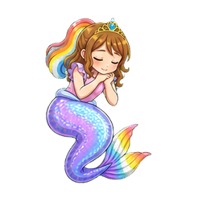
Source4.6/5 · exact region[512, 256, 256, 256]
Closed eyes, joined hands and a curved tail express resting. The familiar child face, tiara, brown curls/rainbow forelock, lavender-pink bodice, iridescent lavender tail and paired rainbow fin remain drawn, high-key and identifiable. Full-body contours and transparent cell margins are intact. Small fingers and detailed tail highlights require an in-game phone-size check; native art quality is not motion/contact acceptance.
SHARED-ROSHAN_GESTURES-07
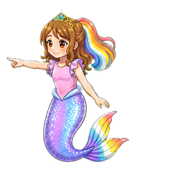
Source4.6/5 · exact region[768, 256, 256, 256]
One arm points horizontally while the other remains relaxed. The familiar child face, tiara, brown curls/rainbow forelock, lavender-pink bodice, iridescent lavender tail and paired rainbow fin remain drawn, high-key and identifiable. Full-body contours and transparent cell margins are intact. Small fingers and detailed tail highlights require an in-game phone-size check; native art quality is not motion/contact acceptance.
SHARED-ROSHAN_GESTURES-08
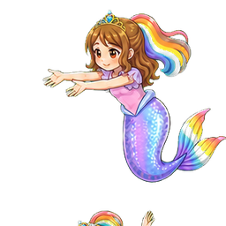
Source4.6/5 · exact region[0, 512, 256, 256]
Both arms extend together to reach in front. The familiar child face, tiara, brown curls/rainbow forelock, lavender-pink bodice, iridescent lavender tail and paired rainbow fin remain drawn, high-key and identifiable. Full-body contours and transparent cell margins are intact. Small fingers and detailed tail highlights require an in-game phone-size check; native art quality is not motion/contact acceptance.
SHARED-ROSHAN_GESTURES-09
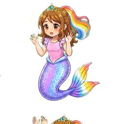
Source4.6/5 · exact region[256, 512, 256, 256]
Both open palms rise beside an alert face. The familiar child face, tiara, brown curls/rainbow forelock, lavender-pink bodice, iridescent lavender tail and paired rainbow fin remain drawn, high-key and identifiable. Full-body contours and transparent cell margins are intact. Small fingers and detailed tail highlights require an in-game phone-size check; native art quality is not motion/contact acceptance.
SHARED-ROSHAN_GESTURES-10
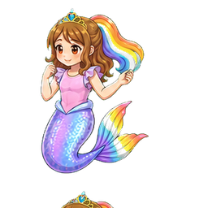
Source4.6/5 · exact region[512, 512, 256, 256]
One hand approaches the cheek while the other gestures outward. The familiar child face, tiara, brown curls/rainbow forelock, lavender-pink bodice, iridescent lavender tail and paired rainbow fin remain drawn, high-key and identifiable. Full-body contours and transparent cell margins are intact. Small fingers and detailed tail highlights require an in-game phone-size check; native art quality is not motion/contact acceptance.
SHARED-ROSHAN_GESTURES-11
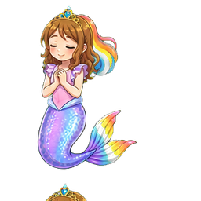
Source4.6/5 · exact region[768, 512, 256, 256]
Closed eyes and a small clasp give a calm humming still. The familiar child face, tiara, brown curls/rainbow forelock, lavender-pink bodice, iridescent lavender tail and paired rainbow fin remain drawn, high-key and identifiable. Full-body contours and transparent cell margins are intact. Small fingers and detailed tail highlights require an in-game phone-size check; native art quality is not motion/contact acceptance.
SHARED-ROSHAN_GESTURES-12
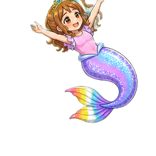
Source4.6/5 · exact region[0, 768, 256, 256]
The whole drawn pose leans broadly with both arms extended. The familiar child face, tiara, brown curls/rainbow forelock, lavender-pink bodice, iridescent lavender tail and paired rainbow fin remain drawn, high-key and identifiable. Full-body contours and transparent cell margins are intact. Small fingers and detailed tail highlights require an in-game phone-size check; native art quality is not motion/contact acceptance.
SHARED-ROSHAN_GESTURES-13
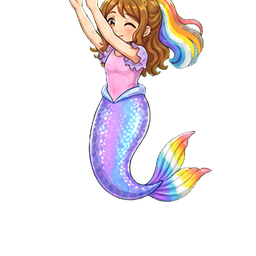
Source4.6/5 · exact region[256, 768, 256, 256]
Both arms lift toward one side during the flourish. The familiar child face, tiara, brown curls/rainbow forelock, lavender-pink bodice, iridescent lavender tail and paired rainbow fin remain drawn, high-key and identifiable. Full-body contours and transparent cell margins are intact. Small fingers and detailed tail highlights require an in-game phone-size check; native art quality is not motion/contact acceptance.
SHARED-ROSHAN_GESTURES-14
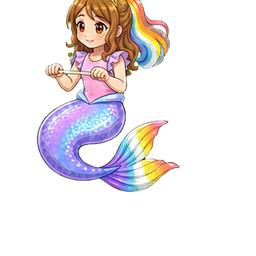
Source4.6/5 · exact region[512, 768, 256, 256]
Hands grasp a small horizontal ride/grip bar in a seated tail pose; unsuitable as empty washing hands. The familiar child face, tiara, brown curls/rainbow forelock, lavender-pink bodice, iridescent lavender tail and paired rainbow fin remain drawn, high-key and identifiable. Full-body contours and transparent cell margins are intact. Small fingers and detailed tail highlights require an in-game phone-size check; native art quality is not motion/contact acceptance.
SHARED-ROSHAN_GESTURES-15
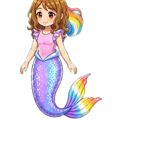
Source4.6/5 · exact region[768, 768, 256, 256]
The familiar upright resting silhouette returns. The familiar child face, tiara, brown curls/rainbow forelock, lavender-pink bodice, iridescent lavender tail and paired rainbow fin remain drawn, high-key and identifiable. Full-body contours and transparent cell margins are intact. Small fingers and detailed tail highlights require an in-game phone-size check; native art quality is not motion/contact acceptance.